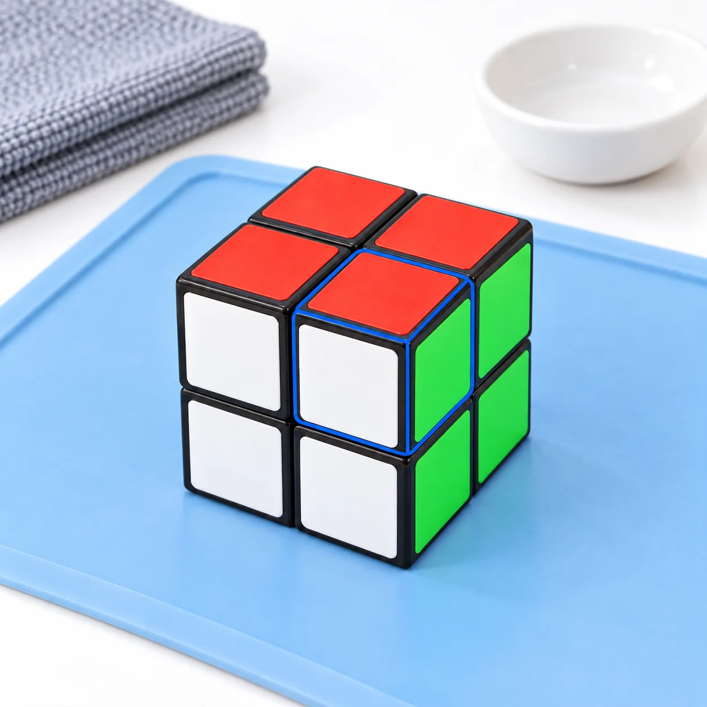
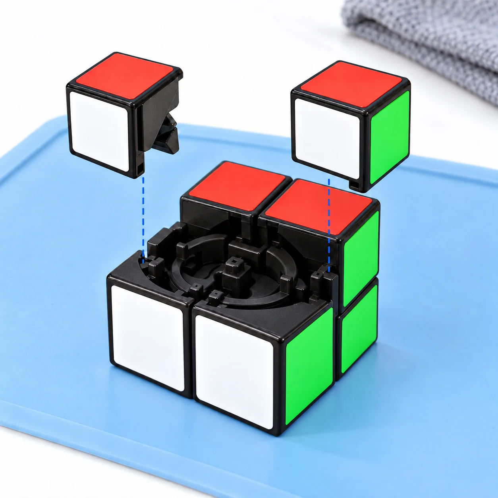
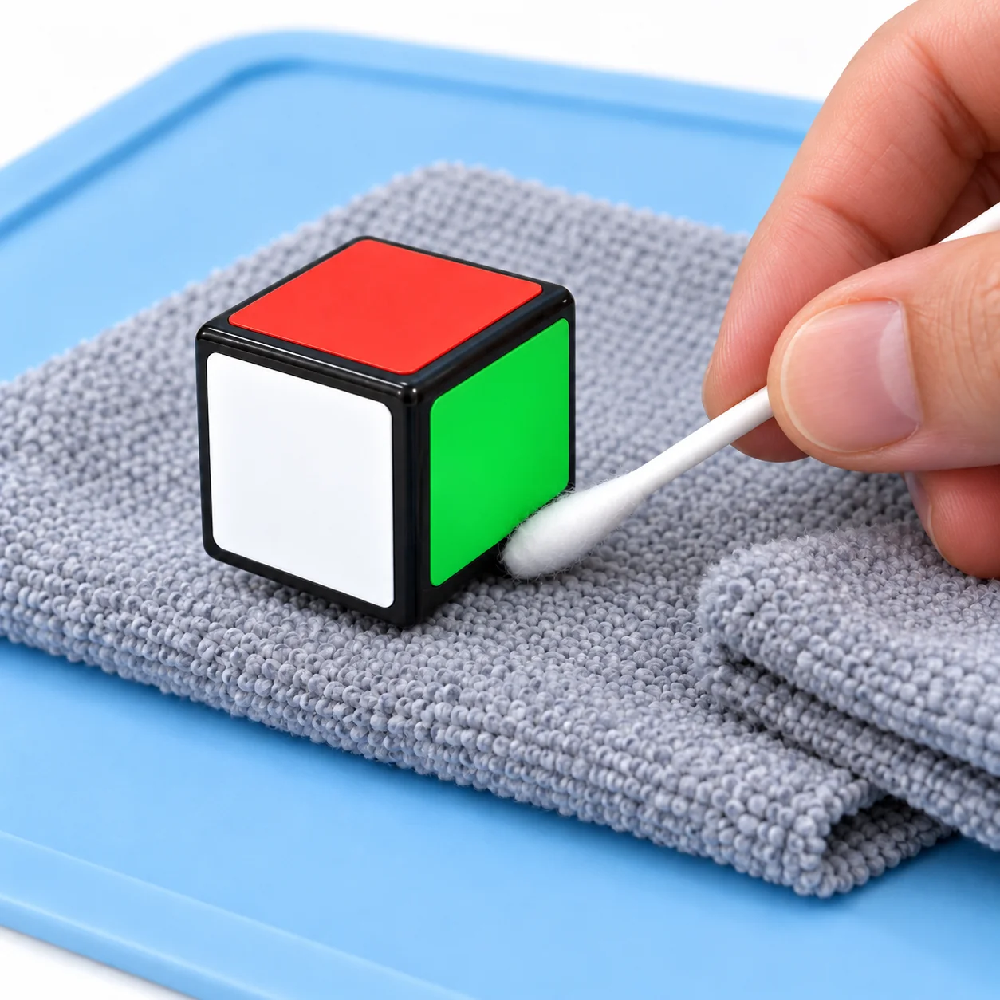
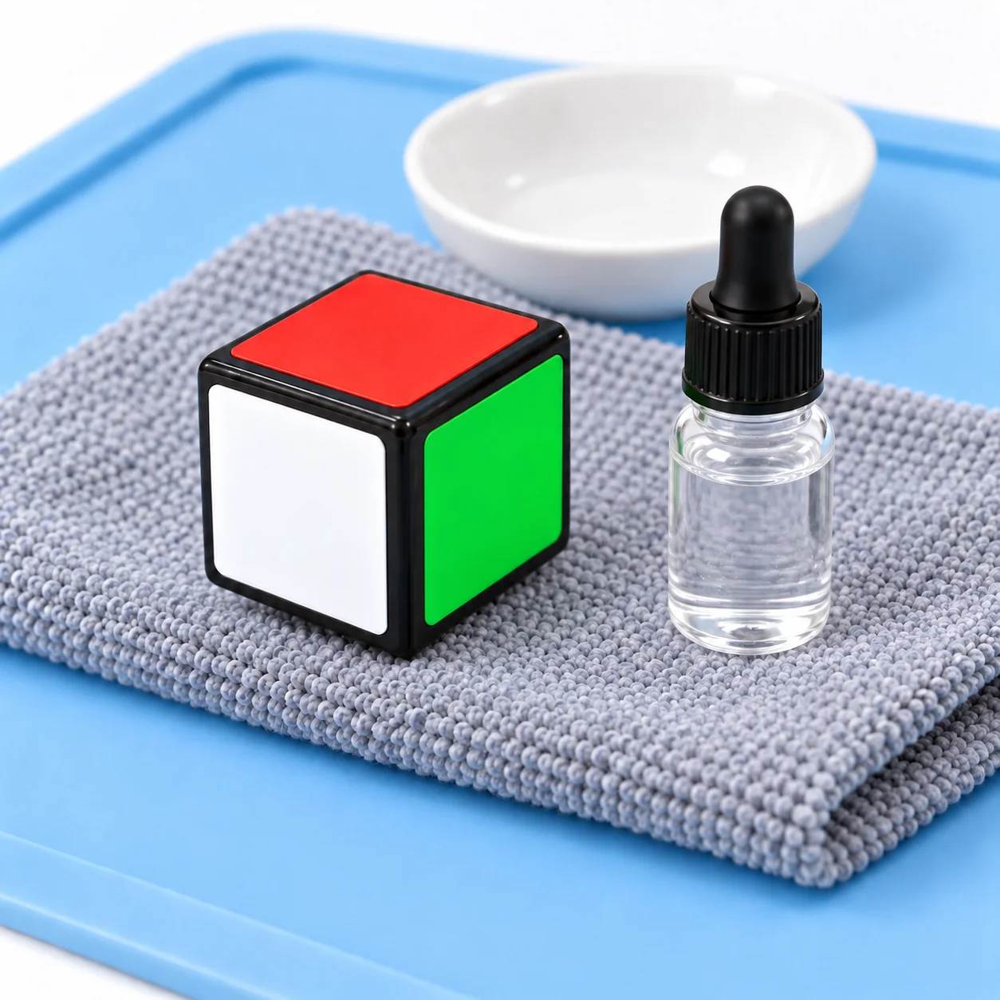
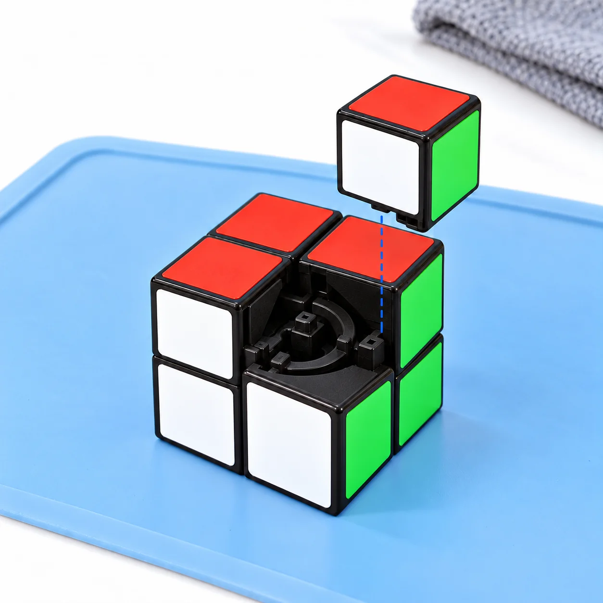
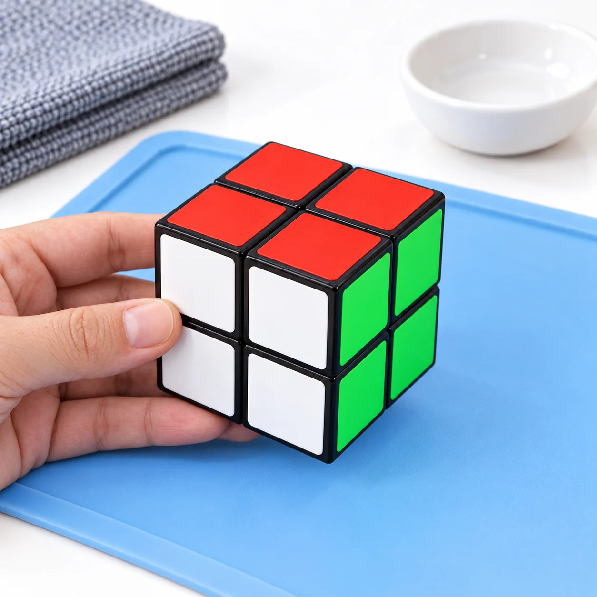

Retire la poussière et les résidus de lubrifiant pour retrouver un 2x2 propre et fluide. Prends soin des huit coins et de leur mécanisme, du premier retrait au contrôle final.
20 à 30 minutes 6 étapes Démontage selon le modèle
Avant le premier geste
Sur ton établi.
Un espace propre et bien éclairé. Les petites pièces vont dans la coupelle.
Le 2x2 ne se démonte pas comme un 3x3. Vérifie la méthode de ton modèle avant de retirer un coin ; certains éléments internes doivent rester en place. Le temps indiqué est une estimation, hors séchage.
Référence illustrée : schéma de montage Rubik’s 2x2 (archive 2008). Compare le mécanisme à celui de ton cube : cette ancienne version n’est pas une notice de démontage des modèles actuels.

Le coin à repérerIllustration générée · Référence Rubik’s 2008
Étape 1 / 6
Le démontage
Repérer le premier coin
Notice du modèle + outil en plastique si prévu
Le 2x2 présente huit coins, sans arêtes ni centres visibles comme sur un 3x3. Commence avec le cube résolu et prends une photo de ses couleurs.
Si la notice prévoit le retrait d’un coin, place les faces dans la position indiquée puis enlève délicatement cette première pièce.

Deux coins séparés, les guides visiblesIllustration générée · Référence Rubik’s 2008
Étape 2 / 6
Le démontage
Démonter et ranger les pièces
Coupelle + photo de référence
Une fois le premier coin retiré, enlève progressivement les autres pièces accessibles selon la notice. Range-les dans l’ordre du démontage.
Garde les petits éléments dans la coupelle et photographie l’intérieur avant chaque nouvelle manipulation.

Nettoyer les parties accessibles du coinIllustration générée · Référence Rubik’s 2008
Étape 3 / 6
Le soin
Nettoyer et sécher les coins
Chiffon microfibre + brosse souple
Retire la poussière et l’ancien lubrifiant des coins avec un chiffon doux ou une brosse souple.
Si la notice le permet, utilise un chiffon à peine humide et un peu de savon doux sur le plastique. Ne trempe pas les pièces contenant des aimants.
Essuie les pièces, puis laisse-les sécher complètement avant le remontage. Nettoie le mécanisme interne uniquement avec un chiffon sec ou un coton-tige.

Pièce sèche, produit compatible à vérifierIllustration générée · Référence Rubik’s 2008
Étape 4 / 6
Le soin
Lubrifier les surfaces de contact
Facultatif
Lubrifiant spécial cube compatible
Cette étape est facultative. Sur les pièces propres et sèches, applique une très petite quantité de lubrifiant spécial cube aux surfaces de contact prévues par le fabricant.
Respecte le dosage du produit. Tu répartiras le lubrifiant en tournant les faces une fois le 2x2 remonté.

Le dernier coin retrouve ses trois couleursIllustration générée · Référence Rubik’s 2008
Étape 5 / 6
La remise en route
Remonter le 2x2
Coins rangés + photo de référence
Replace les pièces dans l’ordre prévu pour ton modèle, en t’aidant des photos et de la notice.
Pour chaque coin, fais correspondre ses trois couleurs aux faces voisines. Le coin rouge-blanc-vert rejoint ainsi les faces rouge, blanche et verte du modèle illustré. Remets les éléments de réglage uniquement si tu les as retirés.

Le cube remonté, prêt au contrôleIllustration générée · Référence Rubik’s 2008
Étape 6 / 6
La remise en route
Vérifier le fonctionnement
Ton 2x2 remonté
Tourne doucement toutes les faces plusieurs fois pour répartir le lubrifiant et vérifier le remontage.
Le 2x2 doit tourner régulièrement, sans blocage ni jeu excessif. Si un réglage a été modifié, retrouve sa valeur initiale avant de l’ajuster progressivement selon la notice.
Étape 1 sur 6
Ces six vues sont des illustrations générées en validation, basées sur le 2x2 du schéma de montage Rubik’s archivé en 2008 : elles ne sont ni des photos réelles ni des plans techniques exacts. Le contour bleu repère un coin ; les pointillés indiquent des emplacements de montage, pas un geste d’extraction. Le flacon fermé ne précise ni une zone d’application ni un dosage. Pour démonter et remonter ton cube, suis la notice de ton modèle et tes propres photos.
Les bons réflexes
Questions fréquentes sur le nettoyage du 2x2.
Nettoyage, séchage et lubrification.
Peut-on nettoyer un 2x2 sans le démonter ?
Oui. Essuie les faces avec un chiffon microfibre et enlève la poussière accessible avec une brosse souple. Pour un entretien intérieur, vérifie d’abord la notice : le retrait d’un coin n’est pas identique sur tous les modèles.
Faut-il retirer les huit coins du 2x2 ?
Pas forcément. Certains coins ou guides restent liés au mécanisme interne : huit coins visibles ne signifie pas huit pièces librement amovibles. Démonte uniquement ce que la notice autorise et garde des photos de chaque étape. Si tu ne connais pas la méthode, limite-toi au nettoyage extérieur.
Peut-on laver les pièces du 2x2 à l’eau ?
Ne plonge pas le cube assemblé dans l’eau. Si la notice le permet, utilise un chiffon à peine humide sur le plastique, sans tremper les aimants ni mouiller les parties métalliques. Tout doit sécher complètement avant le remontage.
Quel lubrifiant utiliser pour un 2x2 ?
Choisis un lubrifiant spécial cube compatible avec ton modèle et applique une très petite quantité sur les zones de friction propres et sèches. Après remontage, tourne les faces pour le répartir. N’utilise pas d’huile domestique ni de WD-40.
Pourquoi mon 2x2 bloque-t-il après le remontage ?
Vérifie d’abord l’orientation des coins, l’alignement des faces et les réglages que tu as éventuellement modifiés. Des résidus de saleté ou un excès de lubrifiant peuvent aussi gêner les mouvements. Ne force pas et reprends la notice si le blocage persiste.